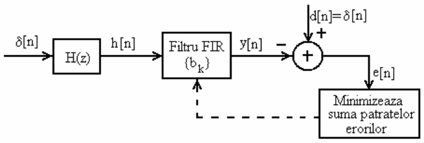

Image restoration with inverse filtering
Lab 5, SDP
1 Objective
Using inverse FIR filters in an image processing application.
2 Theoretical notions
The inverse filter \(H_I(z)\) of any filter \(H(z)\) is the system that cancels the effect of \(H(z)\) on a signal:
\[H_I \lbrace H \lbrace x[n] \rbrace \rbrace \approx x[n]\]

3 Practical application
We illustrate the use of the inverse filter through the following practical application.
Defining distortions
Let the four functions below define a series of distortions on an input signal/image:
distort(), distort_more(), distort_noisy(), distort_delay()
Requirement 1
Copy the functions below into Matlab files so that they can be used later.
function y = distort(x)
L1 = 5;
coef = [zeros(1,L1) 1.1.^[0:-1:-L1]];
coef = coef / norm(coef,1);
coef = fliplr(coef); % filter2 expects kernel, not impulse response, it doesn't flip it
coef;
y = filter2(coef, x, 'same');
endfunction y = distort_more(x)
L1 = 10;
coef = [zeros(1,L1) 1.1.^[0:-1:-L1]];
coef = coef / norm(coef,1);
coef = fliplr(coef); % filter2 expects kernel, not impulse response, it doesn't flip it
coef;
y = filter2(coef, x, 'same');
endfunction y = distort_noisy(x)
L1 = 5;
coef = [zeros(1,L1) 1.1.^[0:-1:-L1]];
coef = coef / norm(coef,1);
coef = fliplr(coef); % filter2 expects kernel, not impulse response, it doesn't flip it
coef;
y = filter2(coef, x, 'same');
y = y + 0.05*randn(size(y));
endfunction y = distort_delay(x)
Delay = 10;
L1 = 5;
coef = [zeros(1,L1+Delay) 1.1.^[0:-1:-L1]];
coef = coef / norm(coef,1);
coef = fliplr(coef); % filter2 expects kernel, not impulse response, it doesn't flip it
coef;
y = filter2(coef, x, 'same');
endDistorting an image
Requirement 2
Load the image lena512.bmp, convert it to type double, convert it to grayscale, and display it.
Use the following Matlab functions:
imread()double(), followed by division by 255im2gray()imshow()
I1 = ... % original image
I2 = ... % after preprocessing
...Requirement 3
Distort the image by calling the distortion function distort() on the image, and display the result.
What does the distorted image look like? What type of distortion is this?
I3 = ...
imshow(I3)Restoring the image using inverse filtering
Steps:
Obtain the impulse response by calling the function on a unit impulse signal
Calculate the inverse FIR filter using the function from the previous lab
Filter each line of the distorted image with the inverse filter (1-D filtering) and store the results in a new image.
For filtering, use one of the following two functions:
- function
filter2(h, I3) - function
filter(h, 1, I3(i,:))on each lineiof the image
- function
Display the result
Requirement 4
Find and display the impulse response of the distortion distort()
h = ...Requirement 5
Calculate the inverse filter with the function InverseFIR() from previous lab, display the coefficients and the impulse response.
What is \(H(z) =\)?
b =
% Make b horizontal
b = b'
stem(b)Requirement 6
Filter each line of the distorted image with the found filter, store the results, and display the final image.
...
imshow(Irec)Final requirements
- Repeat with other images (
bugs.jpg,barbara.png) - Repeat with the other
distort_*()functions. When are the results worse?